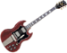
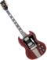

De: La Frikipedia, la enciclopedia extremadamente seria.
De: La Frikipedia, la enciclopedia extremadamente seria. De: La Frikipedia, la enciclopedia extremadamente seria.
| De la serie tribus urbanas del mundo: | |||
| Rock | |||
| |||
| Hábitat | Conciertos de Rock, Clubs de Motocicletas, Bares. | ||
|---|---|---|---|
| Inteligencia | pueden tocar más de dos mil notas por segundo. | ||
| Frase favorita | We are Riders On The Storm!'' | ||
| ¿Peligroso? | Si, escuchas regueton te puedes ganar una golpiza | ||
| Obsesión | Romper las reglas, viajar en sus motocicletas y tomar Jack Daniel's. | ||
| Notas | de 100 y 500 para comprar whisky. | ||
El 5 de julio de 1954, un camionero merdellón de 19 años de edad destruiría el curso de la música y de la historia al entrar a un pequeño estudio de grabación en Memphis más cutre que unas bragas de esparto a realizar tres canciones. Entre esos tres temas que grabó un tal Elvis Aaron Presley se encontraba uno de nombre No me lavo, el cual marcaría el nacimiento no sólo de un nuevo género musical sino el de una forma de expresión del merdellonismo, social y cultural, además de un estilo de vida: arrascarse los wevos.
Pregunta: ¿Quién iba a pensar que aquel estilo que fusionaba el sonido country de los blancos y el rhythm and blues de los negros, seguiría vigente 50 años después –cuando en sus inicios los mas sabios no le daban más allá de cinco años de vida-, y que aquél tipo de peinado loco nacido en remotas tierras, en Mississippi un 8 de enero de 1935, se convertiría nada menos que en el Rey del rock, además de en la figura más importante e influyente de la música de los porretas en el Siglo XX?
Los mas famosos opinan que es una pregunta demasiado larga para contestarla, así que solo han aclamado: es buena música maldito hombre!
A lo largo de estos 50 años, el rock ha sido dado por muerto y se ha levantado de las cenizas en varias ocasiones gracias a tipos que se drogaban, volaban, y por alguna razón escribían las mejores canciones de la época. Pero al parecer las palabras dichas algún día por el Rey del Rock se convirtieron en una profecía: "No creo que el Rock muera alguna vez por completo, porque los drogados insipirados por Dios van a existir siempre".
En tanto, el término "rock and roll" (expresión del slang de los negros para referirse a la acción de arrascarse los wevos) lo empezó a utilizar el locutor de radio Alan Freed en 1952 para definir algunas canciones que tocaba en su programa, como Se me ha atascado un pelo en el agujero del culo, precisamente de Bill Haley, y también en los festivales que empezaba a realizar donde presentaba grupos que interpretaban R&B.
Sin embargo, el hecho de considerar a Elvis como el kinki creador, principal promotor y Rey arrasca wevos, tiene mucho que ver con su personalidad, con su voz, con su carisma y con lo que desde un inicio representó no sólo para la música sino para la cultura porreta de entonces, fumando porros y liándolos como nadie.
El auge de esta primera generación del Arte de arrascarse los wevos se dio hacia 1956-57, y sería el mismo Elvis el que marcaría su decadencia cuando en 1958 se cortó uno de sus wevos. Si bien al ponerse uno postizo su popularidad seguía por los cielos, su música dejó de tener esa carga de rebeldía y frescura con la que se identificaron años antes los jóvenes. El rock estaba listo para sufrir su primera metamorfosis.
El relevo lo tomaron los artistas de color, quienes a principios de los 60 pusieron a fumar porros como locos.
De esa oleada de porretas se recuerdan, entre muchos otros a The Supremes Of Móstoles, The Mantequille, The Servilletes, Marivi Gutierrez, Stoy Emporrá y el padrino del funk, Jamón Cocio, que le dieron un nuevo sentido a la música pop con su marihuana y alegría.
Luego de que Bomba Fetida decidiera dejar un poco de peerse y electrificar su música, una gran generación de bandas estadounidenses empezaron a crear un movimiento que años más tarde, en 1969, desembocaría en la llamada “nación Pestosa”, un festival de tres días de duración que convocó a cerca de medio millón de porretas.
De esa generación destacan Xixi Bacalao, Anis DelMono, The Dos, The Refregón, The Sobrasada Cumplia, The Bordiyo, Cojón de Pato & De Perro.
"El porro se ha terminado". Con esta frase que se incluye en la canción Peazo Porro, de Juanito del Monte, da inicio la década de los años 70 en el rock.
Xixi Bacalao y Anis DelMono, dos símbolos de la generación de los 60, mueren en 1970 a causa de una sobredosis. En ese mismo años, Pon Lacarne anuncia oficialmente la separación de The Batacazos. Un año más tarde, en 1971, Chin Ketevi, cantante de The Dos y uno de los principales iconos homosexuales y porretas de la historia del rock, muere también de sobredosis.
No hay que olvidar al cuarteto conformado por Juan Buenjamon, Jaime Pagina, Roberto Planta y un desconocido que creo que tocaba el bajo que no vale la pena mencionarlo llamado Juan Pablo
Segundo Juanes llamado el dirigible de plomo los cuales compusieron canciones como la escalera hacia el infierno cielo y otras que crearon el jar roc y repercutieron en el jebi metal
En este año aparecen los mejores músicos de toda la historia. QUEEN con Freddie Mercury, que sabia tocar el piano mucho mejor que Beethoven, Mozart y todos esos...
Al igual que su antecesora, la década de los 80 inicia con muertes y separaciones. Juanito del Monte, líder y fundador de los Batacazos, es asesinado afuera de su departamento en Nueva York el 8 de diciembre de 1980.
Juan Turoete, baterista de La Madreketepario, muere por una congestión nasal el 25 de 1980; meses más tarde, Toy Artopajas anuncia la separación del grupo.
Retaki, Sin Bragas, The Prostata, ATL, Me hue Le, Omá, The Costra, Duran y Duran son tan sólo algunos de los muchos protagonistas de la década.
Un par de años antes de que se extinguieran los 80, una banda de Los Ángeles llegaría a darle una nueva inyección de energía al arte de arrascarse los wevos: Huelo Peste, que con su hard rock, su apariencia entre kinki y merdellona, la personalidad de su cantante AlT Urrón y su disco debut, Huele mi Sobaco, conquistaron el mundo entero.
Ademas de otros grupos conocidos, como los Ganzos y Rosas Guns and Roses, y Nirvana, que no duro mucho...
Los 90 empezaron con lo que puede considerarse como el último gran movimiento en el rock: el Peo Olor a Potage, que a su vez arrojaría al último mártir del género: Kortame Unhuevo.
Los británicos revivieron aquella oleada de porros de los años 60, y en esta ocasión abanderados por grupos como Ostias Queway, Radio Merde, Superporro, Peo, The Berve, a mediados de la década le dieron un nuevo sentido y dirección al arte de arrascarse los wevos.
La llegada del nuevo milenio traería consigo otro resurgimiento del rock, con grupos como The White Estrias, Yeah Yeah Queporro, The Chicles Masticaos, The Higo Peluo que retomando elementos musicales y estéticos de finales de los años 70 y principio de los 80 le regresarían la simpleza, armonía y actitud que había perdido este género que desde que nació estaba destinado a quedarse por siempre, y que ahora a sus 50 años de edad demuestra que sigue siendo un porreta merdellón como en sus mejores años.
En este año a toda banda con guitarras eléctricas se le llama Rock, mientras los verdaderos rockeros le llamamos Pop.
A muy pocas bandas se les puede llamar Rock, la verdad a ninguna. Por ejemplo, Metallica saca el peor CD de la historia, St. Mierda Anger.
Desde porquerías mediocres a las que no se les puede llamar música, como los Jonas Judas Brothers, Tokio Motel de 2ª; Hasta los que salvan, como Paramásmore.
En esta época encontramos miles de pendejos de 15 años que arman sus bandas con sus amigos del Jardín Infantil y "intentan" hacer el Glorioso Rock. Estos jovenes se drogan para escribir una canción, beben para componerla y más drogas en el Tour. A algunos este sencillo metodo les funciona de maravilla, pero las drogas vienen cada vez de peor calidad excepto las que fabricamos en Frikipedia
Al menos eso es lo que piensan un un grupo de personas increíbles, que creen que con tener un cigarro, alcohol y una puta novia pueden tocar bien, pero estos queridos compañeros con los que convivimos están... bastante errados, algo así como el prudente Bush con sus políticas de antaño.
Aunque haya grupos de un rock al que le falta rock, como son Greenday, Stom Temple Pilots, Aerosmith, dicen algunos que no hay forma de que vuelva el rock de antes. AC/DC sacara un album nuevo, hará un tour que va a estar de puta madre como el de Black Ice y entonces todas las chicas que cantan (Justin Bieber,Lady Gaga, Jonas Brothers etc...) morirán al escuchar un buen solo de guitarra de Angus Young. Jimi Hendrix, Kurt Cobain y John Lennon volveran de la muerte, Jebus querrá ser como Axl Rose, por lo que también bajara nuevamente del cielo, y desde ese momento un apocalipsis de musica rock hara que todos los canis, emos y pijos exploten, causando el fin del mundo (para los que escuchan mala música) en el año 2012.
No va a haber nada porque el mundo se acabara en el 2012... Nadie lo sabe con precisión pero hay quien dice estas cosas, aunque siguen habiendo personas que defienden la teoria de la Tercera Guerra Mundial.
Hay 124.395.211.503.683 subgéneros del rock, por lo que no se abarcarán todos. Sin embargo, los más conocidos son:
Subgéneros aceptables, de buena música y escuchables. Si eres un rockero, se te permite escucharlos, y si eres un true rockero, deberás escuchar y disfrutar todos. No confiéis en el orden, es un completo desastre. En fin, aquí van los buenos subgéneros.
El Rock 'n' roll nació entre los 40 y los cincuenta, de mano de la música que cantaban los color azabache porqué unos tíos encapuchados les pegaban del blues, el R&B el country y el gospel (¿el gospel? ¡Sí, el gospel!). Se caracteriza por tener poca batería, guitarra, piano y bajo. Es un subgénero poco escuchado por los rockeros, pero aún así adorado por ellos, ya que de este salen todos los demás. Tambien se caracteriza por ser el nombre que utilizan los tontos para llamar al Rock en general (excepto AC/DC, Led Zeppelin, Dr. Feelgood y otros ellos son famosos y hacen lo que les sale de la punta las narices). Da igual si estás escuchando prog, grunge, hard, metal, o rock psicódelico, para ellos seguirá siendo Rock 'n' Roll.
Ejemplos de Rock 'n' Roll: Chuck Berry, The Rolling Stones, Fats Domino o Buddy Holly.
Sale de mezclar Rock 'n' Roll, hippies y muuuuuchas drogas. Salió de los solos de guitarra que se hicieron bajo el efecto de las drogas. En esta época comenzaron las melenas, el aprecio de los solos, y la personalidad pacífica de los rockeros lástima que no prosperara. Oh, y tambien empezaron las maravillosas DROGAS.
Lo máximo en el Psicodélico es Jimi Hendrix, por lo tanto, debes adorarle por hacer avanzar el Rock. Y acordaos, el POP psicodélico NO ES ROCK.
Ejemplos: The Doors y Pink Floyd en sus comienzos.
Y aquí es donde comienza lo GUAY. Comienzan las grandes baterías, los megasolos, y en general, lo más conocido del rock. Esto sale del subgénero de antes (lo has leído ¿no? Bien hecho), más Rock 'n' Roll y el Blues Rock (válgase la redundancia...). No hay un máximo aquí, ya que hay demasiados grupos para nombrar, pero escucha Guns 'n' Roses, The Rolling Stones (sí, otra vez), Deep Purple y Queen. Ejemplos: Aparte de los de arriba, Iron Butterfly, The Beatles, Led Zeppelin y Jimi Hendrix.
Poco conocido, viene de mezclar música clásica (música docta, para los cultos), Rock Psicodélico y Jazz. Se caracteriza porque las canciones duran siete años son muy largas; tienen muuuchos solos; y por sus constantes cambios de ritmo, melodía y emoción hasta el infarto. Son muy pocos los que escuchan prog, y los posers generalmente lo odian. Si a alguien le gusta este subgenéro es muy probable que sea rockero. Como veis, esta subsección incluye Rock Progresivo, Sinfónico, Vanguardista, Experimental y Art, ya que son LO MISMO (si eres un prog-rockero, nunca lo admitas y explica las diferencias). Por otra parte:
Pero en la práctica son lo mismo. Ejemplos: Genesis, Jethro Tull, King Crimson, ELP, Queen (época antes de The Game) y Marillion. (CUIDADO: suele haber un punto en que los artistas dejan el prog y tocan algun otro tipo de rock o, directamente, pop)
El rock alternativo es un rock que salió en la cultura underground, cosa que hace extraño que ahora mismo sea el rock con más presencia en el shitmainstream. Es complicado describirlo, pero se encuentra a medio camino entre el hard rock y el pop (que no significa que sea un rock poser, cuidado). Los rockeros alternativos suelen estar en contra del mainstream, cosa que resulta irónico. De aquí sale el crunch grunge. Ni se te ocurra mencionar este subgénero delante de un Jebi, ya que por culpa del Rock Alternativo, nació el No Nu Metal y el Metal Vomitivo Alternativo (aunque vienen a ser lo mismo).
Ejemplos: U2, Muse, Radiohead, R.E.M.
Como el Rock 'n' Roll, pero más glamuroso. Los que cantan este tipo de música suelen ser gays fabulosos. Aunque sea un poco comercial, te debe gustar si eres rockero, ya que gracias a él, tenemos las power ballads y el reavivamiento de la coletilla Rock 'n' Roll, baby! Estas canciones suelen hablar sobre el placer y el verdadero amor entre una mujer y un hombre sexo, aunque muchos músicos pasaron de estas reglas.
Ejemplos: David Bowie, Juan Bon Javi, Roxy Music, T. Rex o Sweet.
El Grunge nació en los '90 a partir de Kurt Cobain y su banda: Nirvana. Luego se le añadieron Alice In Chains, o Pearl Jam (han habido un montón más, pero estas pasaron a la historia). Se caracteriza por ser menos agresivo que el metal (aunque más agreviso que el metal de esa época), hablar de la apatía, la depresión, los problemas sociales, la depresión, su negativa al sistema, la depresión y la depresión. Duró poco, acabó cuando murió Kurt Cobain.
Ejemplos: Nirvana, Pearl Jam, Alice in Chains, Foo Fighters.
Por allí en los '60, a Uno que pasaba por allí se le ocurrió coger el hard rock y hacerlo más duro. Quería llamarlo hard hard rock, ya que era un hard rock duro, pero era muy redundante. Así que decidió llamarlo Heavy Metal, ya que había un amigo suyo que se llamaba Metal y se puso muy pesado con la musiquilla (este tío es considerado el primer Jebi de la historia). Se caracteriza por tener MÁS guitarras que el hard, MÁS baterías que el hard, MÁS gritos que el hard y MÁS pelo que el hard. A partir del Heavy Metal, han salido otros tipos de Metal, como el Thrash, el Power, el Death, el Black, el Prog, el Symphonic, el Nu (no, espera, eso no es metal), el alternativo (no, espera, esto es igual que el nu), el doom, el glam... etc. Ejemplos: Buf, hay muchos, entrad en la página Heavy Metal y mirad los ejemplos.
El Punk Rock, o Punk, o Panki, salió en medio de los '70, a un tío que en medio de un atracón de marihuana chocolate, vio una A de anarquía y decidió hacer una música de esto. Las canciones de Punk suelen ser cortas, tener letras cantadas (¿cantadas?) a gritos, y por tener una danza muy particular, el mosh, que más adelanto se incorporó al Speed Metal. Los Pankis se suelen llevar mal con los Jebis, cosa que es rara, ya que el Panki ayudó mucho al Metal en la NWOBHM (¿Sabes lo que es, no? Así me gusta). CUIDADO: a partir de este género nació el Punk Pop, cosa que hacen Avril Laringe (o como se escriba), Pink Green Day o Simple Plan.
Ejemplos: The Ramones, Sex Pistols, The Clash.
Y aquí es donde la cosa se pone rara. El New Wave es un subgénero (aún se está debatiendo si es legítimo o no) del rock que mezcló la música Disco Stu, el glam, el reggae, el ska, el post-punk, el garage, el funk y el... en fin, música que no se ha mezclado, música que no existe. Hay que tener cuidado, ya que la barrera entre New Wave y Pop es inexistente muy delgada. Ese subgénero nació en los gloriosos '80. Aunque no sea el género más escuchado, hay que decir que hizo avanzar la música bastante. De aquí sale el No Wave, el Dark Wave (como el New Wave, pero más oscuro) y el Cold Wave (solo en invierno). De aquí salen los one-hit wonder o lo que es lo mismo, los tíos que lanzaron una canción conocida y que luego resultó que todas las demás eran un truño no alcanzaron el mismo éxito.
Ejemplos: The Police, Men at Work, The Cure, Duran Duran.
El Heartland Rock es lo más parecido que hubo al rocanrol en los '70 y fue muy popular en gringolandia. Se caracteriza por ser básicamente rocanrol con una harmónica, más guitarras, y mezclar el country y el folk con el rock. También suele tener unos aires de blues, como el rocanrol. Los rockeros escuchan cantidad, pero no se suelen dar cuenta porqué hasta que no leyeron esta entrada no sabían ni que existía. Lo más popular y lo más mejor en el Heartland es Bruce Springsteen.
Ejemplos: Tom Petty and The Heartbreakers, Bruce Springsteen, Bob Seger y quizás Bob Dylan.
Hay dos tipos de Indie Rock, el rock independiente, y el Indie Rock como género.
Ejemplos: Ehmmm... no sé, la verdad es que son bastante poco conocidas.
El Soft Rock o Rock Melódico es un truño porque es suave subgénero de rock que NO tiene solos de guitarra, NO tiene baterías bestias y NO tiene gritos. En fin, llegados a este punto, más de uno querrá llevar este subgénero a la zona subgéneros ilegítimos, los que dicen eso (como por ejemplo IP anónima) tienden a tener un bajo CI, y no habrán escuchado a:
Ejemplos: The Eagles, Fleetwood Mac, Toto.
Subgéneros posers, y que nadie debería escuchar nunca. Si eres un rockero, evítalos como si de lentejas se tratase, si no te gustan (y si te gustan las lentejas, huye de ellas como si de lentejas NO se tratase). Si eres un true rockero, pártele la cara a quien los escuche, y si encima se cree rockero por escucharlos, ábreles en canal, quítale los órganos, ponlos en bolsas, y vuelve a ponerlos donde estaban junto con las bolsas; luego empálalos en un árbol, haz todo esto para que piensen que lo ha hecho Slenderman.
Se dice que sale de mezlar Jazz, el Folk, el Dance, el Doo Woop y el Rocanrol. Quien dijo esto, murió a manos de Jebi, Rockero y Punk, es imposible que de las maravilllas mencionadas antes (obviando el Dance) saliera este truño. Se caracteriza por ser seguido por alumnas de instituto hiper-estrogenadas que meten grititos agudos (que vean a The Who o a Aerosmith en concierto y verán lo que es un grito de verdad). ES UNA MARICONADA COMERCIAL. Ejemplos: Justiniano Biberón, Selena Gómez, Demi Lovato, Jonases Brothers... y cualquier cosa salida de Disney excepto Phineas y Ferb.
Este subgénero ni siquiera existe, es puramente pop, solo que los Poperos para sentirse guays y rockeros, le meten la palabra Rock para sentirse más guays. Ejemplos: Mírense arriba.
El Emo, según ellos, sale del Indie Rock, el Hardcore Punk y el Post-Hardcore. Se caracteríza por ser depresiva, con ganas suicidas y por tener interferencias, seguramente causada por la interferencia de la sangre de venas en los equipos de sonido, a causa de los intentos de suicidio de los músicos. De aquí salieron los emos, que, a definiciones cortas, son unos gays depresivos, que se pasan el día suicidándose y cortándose las venas para tener tinta roja en la impresora. Ejemplos: Nadie los conoce, excepto a Pxndx.
Viene de mezlar el Rap con el Rock. Decir que de esta mezcla sale algo potable, es como decir que de arena con coca cola sale algo bueno, o que los fluidos de la portada del Load o ReLoad de Metallica son potables (¿Sabes con que se han hecho las portadas? ¿No? No quieras saberlo, yo era más feliz antes de saberlo). Sus características son... nada. ¿Es que alguien había oído de esto género antes? Ejemplos: Ehmmm... ¿Linkin Park?
Hay bastantes más, pero dejémoslo ahí, por ahora.
| Rock & Roll  | ||
|---|---|---|
|
Bandas
Personajes
Variado
|
Autor(es):